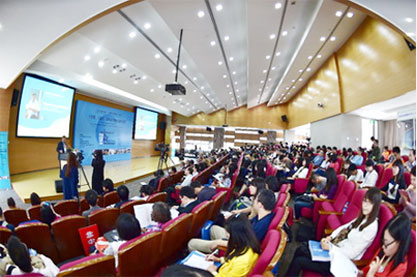

学院新闻
上海交通大学-国际传播学会（ICA）2014新媒体峰会在我校举办
ICA国际传播协会大数据
2014年10月25日，上海交通大学在上海召开了国际传播学会（ICA）2014新媒体峰会，以“大传播大融合：新媒体传播的机遇与挑战”为主题，重点探讨大数据时代新闻传播产业的融合发展。 2014年10月25日，上海交通大学在上海召开了国际传播学会（ICA）2014新媒体峰会，以“大传播大融合：新媒体传播的机遇与挑战”为主题，重点探讨大数据时代新闻传播产业的融合发展。来自美国、德国、英国、比利时等国的著名专家，香港中文大学、台湾世新大学等港台著名专家，以及中国社会科学院新闻所、清华大学、上海交通大学、复旦大学、中国人民大学、中国传媒大学、兰州大学、西北师范大学等300名专家学者与会。 上午8点半，新媒体峰会正式拉开帷幕。上海交通大学媒体与设计学院院长李本乾教授主持开幕式，上海交通大学常务副书记郭新立发表了热情洋溢的书面致辞。他说，本次会议聚焦新媒体与大数据，涉及大数据、媒体融合、新媒体教育等领域，既有宏观理论思考又很接地气，当今世界，传统媒体与新媒体之间正在不断融合，新的技术不断改变我们的社会与产业，大数据正在成为一个国家的重要战略资源，新媒体是大数据聚集的主要领域之一。 国际传播学会主席Peter Anton Vorderer表示，新媒体正在改变世界，我们处在一个随时连接，随时沟通的时代，时代的变革促使研究者适应新的环境，采用新的方法不断推进新媒体的融合，大数据作为一种普遍存在的研究来源是未来各类研究的基础，可以说数据就是未来，他希望国际传播学会与上海交通大学在多个领域进一步拓展合作空间，在更广阔的范围内推动学科发展。 媒体与设计学院院长李本乾教授在发言中强调，大数据与新媒体不但是社会发展的趋势也是国际传播学界研究的趋势，由于新媒体和大数据都具有技术属性，因此交通大学在发展新媒体的过程中具有明显的学科优势，也是未来学科的发展方向。 在随后的主题报告环节，来自美国、英国、德国等国家的8位教授与来自中外新媒体业界的实践者，就媒体产业融合、大数据与新媒体产业、新技术与传播创新等主题发表了各自的精彩演讲。 据悉，成立于1950年的国际传播学会，是当今世界传播学领域最具影响力的国际学术团体，拥有来自60多个国家的会员。它在世界范围内，向各国传播学者提供最新的前沿成果和学术思想。 媒体与设计学院新闻传播学科近年来发展迅速，从无到有，从弱到强，在2012与2014年的世界QS排名中均进入全球百强。 近年来，国际传播学会非常重视与上海交通大学的合作，连续与上海交通大学联合举办各类高峰论坛，获得了全球范围的影响力。迄今为止，上海交通大学是国内高校中与国际传播学会合办国际会议最多的大学。国际传播学会将世界范围内最新的研究成果带入中国，上海交通大学则将国内的最新研究成果展现给世界，双方实现了强强联合，也标志着我校的新媒体方向已取得国际同行的认可。 本次峰会不仅邀请了国内外的学者探讨理论和实践问题，同时也邀请了国际核心期刊SSCI的多位主编来到现场与国内的学者与期刊主编进行学术对话，从学术规范等角度推动国内新闻传播研究的规范化。
媒体与设计学院院长李本乾教授主持开幕式
海内外专家学者参加论坛的场景
国际传播学会（ICA）主席Peter Anton Vorderer教授致辞
SSCI期刊主编分论坛演讲场景
（供稿 李佳蔚 郑莹 摄影 张 帆）